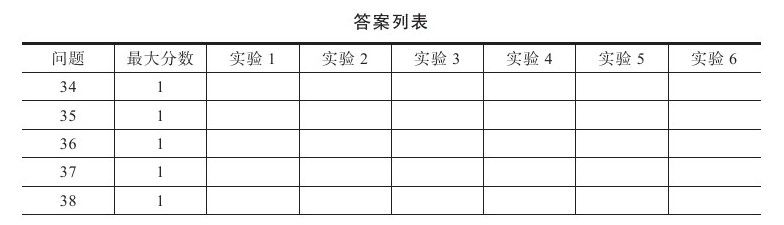
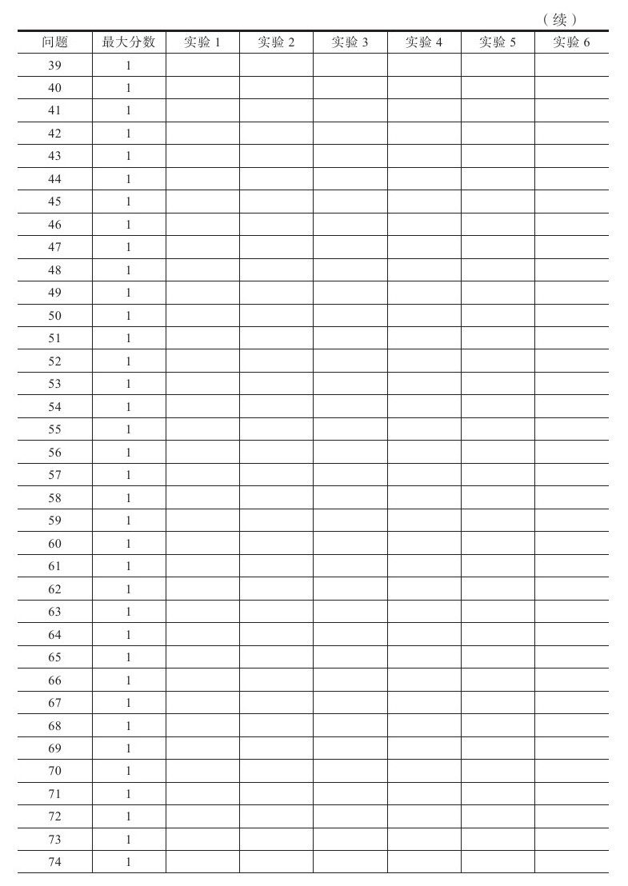
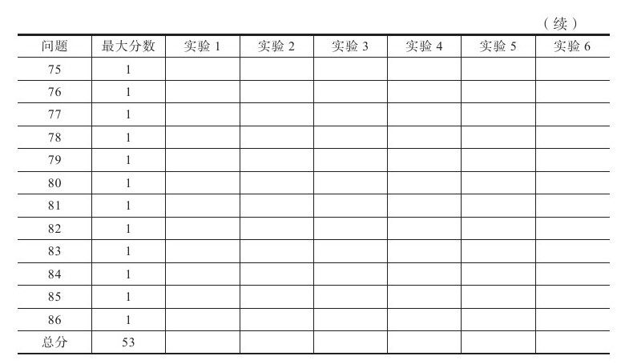

你买了一只股票，目前处于浮盈状态，你需要决定什么时候才是正确的卖出时机并把浮盈变成实实在在的利润。你立即卖掉落袋为安？你要继续持有以获取更多利润？如果你准备继续持有而市场开始对你不利，你该怎么办？要获利还是等待止损？
卖出这个问题必须用严肃的态度和商业的眼光去对待。你要知道如何为交易设置止盈目标、止损价格。没有人会保证交易一定成功，所以你需要决定何时出场，而且这个决定必须在交易之前就做好。
在思考本章的问题时，请以一名交易者的身份把这些问题和实际交易联系起来思考，不断从交易日记中学习。卖出是这本书的主线，因为卖出的问题最多，所以在卖出这个问题上你必须得到高分，如果有必要，可以重新做本节的测试。



下列关于既定的卖出计划，哪项不正确：
1.它会确保成功
2.它会减少压力
3.它将分析与交易分割开来
4.它帮你减少因市场波动而做出的反应